1. Primeros pasos
Instalar
- Descarga
squaero-X.Y.Z-x64.mside la página de versiones. - Ábrelo y sigue el instalador. No hace falta instalar aparte ningún runtime: la interfaz va dentro del ejecutable y usa el WebView del sistema.
- Si quieres verificar la descarga, en la misma versión está
SHA256SUMS.txt.
Windows de 64 bits. Si tenías la versión de 32 bits (hasta la
0.30), el instalador nuevo la quita y ocupa su lugar en
Program Files: tus conexiones, snippets y ajustes siguen ahí.
Lo único que se pierde es el anclaje en la barra de tareas, que apuntaba a
la carpeta vieja: vuelve a anclar Squaero una vez.
En Linux (x86_64) hay dos opciones:
- El .deb, para Ubuntu 24.04+ y Debian 13+: descarga
squaero_X.Y.Z_amd64.debde la misma página e instálalo consudo apt install ./squaero_X.Y.Z_amd64.deb. apt trae el cliente de cada motor. - El snap, para cualquier distribución con snapd:
sudo snap install squaero.
En macOS (Apple Silicon, macOS 15 o posterior; desde la 0.32.0):
descarga squaero-X.Y.Z-arm64.dmg, ábrelo y arrastra Squaero a
Aplicaciones.
La primera vez, macOS lo bloquea. Squaero va firmado ad hoc, sin un
Developer ID de Apple, y macOS dice que no puede verificarlo. Abre
Ajustes del Sistema → Privacidad y seguridad y pulsa
Abrir igualmente; solo hace falta una vez. Desde la Terminal vale
también xattr -dr com.apple.quarantine /Applications/Squaero.app.
Informix. No hace falta ningún cliente de IBM: Squaero se conecta
por DRDA al listener drsoctcp del servidor, normalmente en el
puerto 9089 (no el 9088 de los clientes de IBM). Si tu servidor no lo tiene,
pídele al administrador que lo añada.
La ventana, por partes
La primera vez la app abre maximizada y sin ninguna conexión:
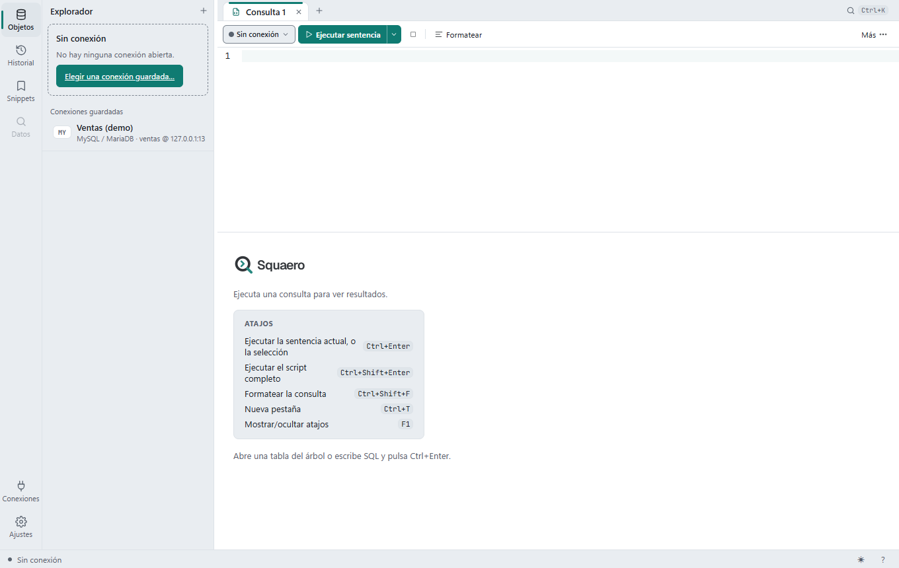
- Barra de la izquierda — cambia lo que muestra la columna lateral: Objetos (el explorador), Historial, Snippets y Datos (buscar un texto en todas las tablas). Abajo, Conexiones y Ajustes. Pulsar el panel que ya está a la vista pliega la columna.
- Explorador — cada conexión abierta encabeza su propio árbol: motor, nombre, a qué servidor apunta y el menú Herramientas.
- Centro — las pestañas. Cada una es una consulta, los datos de una tabla o una herramienta, y queda atada a la conexión con la que se abrió. Arriba a la derecha, Buscar o ejecutar (Ctrl+K) encuentra objetos, herramientas y acciones.
- Barra de estado — conexión activa, filas y columnas del último resultado, cuánto tardó y con qué alcance se ejecutó, el cambio de tema y F1 para los atajos.
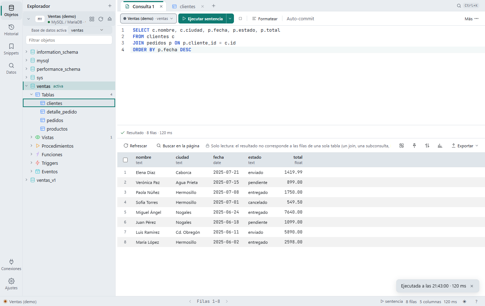
Elegir el estilo
En Ajustes › Apariencia › Estilo hay cuatro: B · Nativo (el predeterminado, claro y sobrio), A · Quiet pro (oscuro y frío), C · Editorial (oscuro y cálido) y Rosa pastel. Todos tienen el mismo diseño y las mismas pantallas; cambian los colores, la tipografía y los radios. Modo elige entre seguir al sistema, claro u oscuro, y Ctrl+Alt+L alterna entre claro y oscuro.
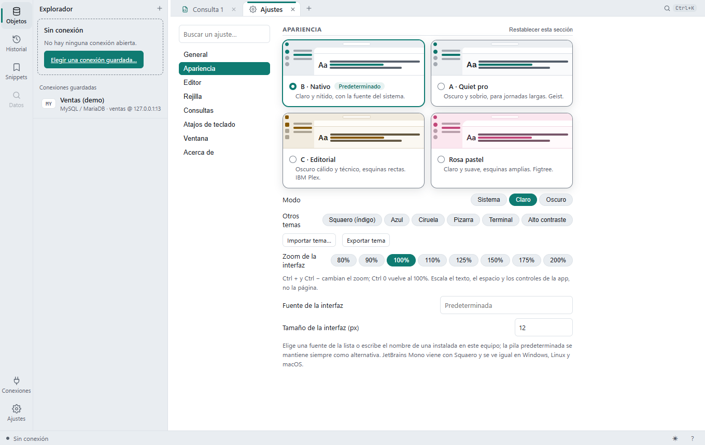
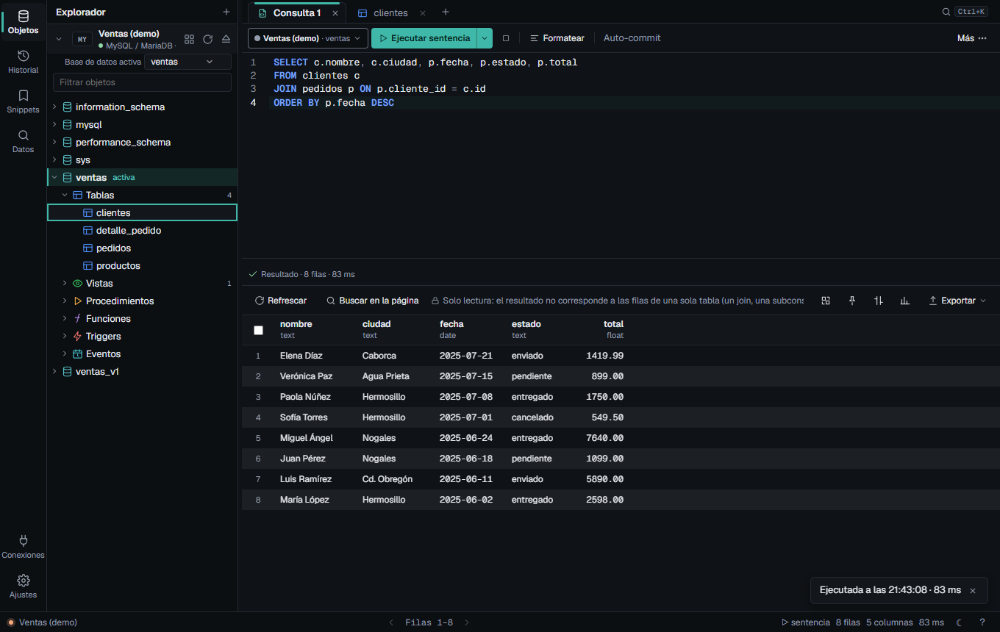
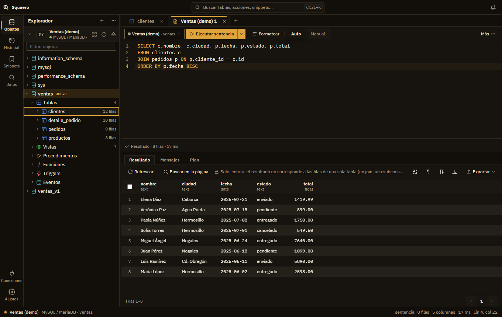
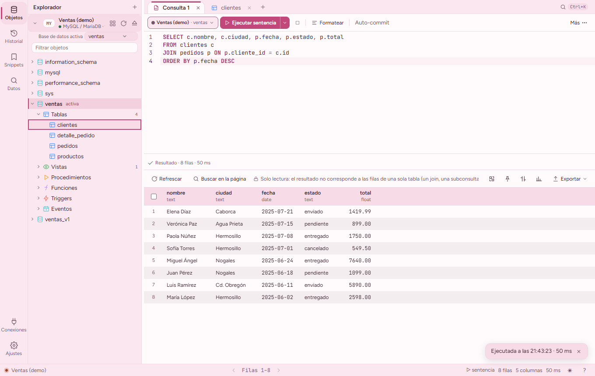
Dónde queda todo
Las conexiones, el historial, los snippets y las preferencias se guardan en tu equipo. No hay cuenta, no hay nube y no hay telemetría: nada de lo que haces sale de la máquina salvo lo que la propia consulta manda al servidor de base de datos.
Tus pestañas de consulta también vuelven al reabrir la app, con el SQL que tuvieras escrito aunque no lo hubieras ejecutado — que es justo lo que se pierde cuando se va la luz; lo ejecutado ya estaba en el Historial. Se guarda solo mientras escribes, sin botón. No vuelven los resultados: la consulta se vuelve a ejecutar cuando tú quieras, en vez de enseñarte una rejilla vieja con cara de recién traída.
2. Conectar a una base
Crear una conexión
Las conexiones guardadas viven en su propia pestaña: ábrela con Conexiones, abajo en la barra de la izquierda. Es la única herramienta que funciona sin estar conectado a nada, porque es por donde se crea la primera.
- Pulsa + Nueva conexión.
- Ponle Nombre, y si quieres un Color, un Grupo y un Icono. El color pinta la franja de la ventana cuando esa conexión tiene el foco — la forma más rápida de no ejecutar en producción creyendo que estás en pruebas. El grupo es solo un nombre: escribir uno nuevo lo crea.
- Elige el Motor. El formulario cambia a los campos que ese motor necesita (tabla de abajo).
- Rellena los datos y guarda: vuelves a la lista con la conexión nueva ya en ella. Abrirla es el paso siguiente.
| Motor | Campos |
|---|---|
| SQLite | Archivo de base de datos — la ruta del .db, o :memory: para una base temporal. |
| MySQL / MariaDB | Host, Puerto (3306), Base de datos, Usuario, Contraseña. |
| PostgreSQL | Host, Puerto (5432), Base de datos, Usuario, Contraseña. |
| IBM Informix | Host, Puerto / servicio (un número como 1526 o un nombre de /etc/services), Servidor (INFORMIXSERVER), Base de datos, Usuario, Contraseña. |
| MongoDB | Host, Puerto (27017), Base de datos, Usuario, Contraseña, Base de autenticación (normalmente admin) y TLS. |
| SQL Server | Host, Puerto (1433) o Instancia (un nombre como SQLEXPRESS, en vez del puerto), Base de datos, Usuario, Contraseña y Cifrado. |
En los motores de servidor, el campo Base de datos se puede desplegar: cuando el resto de los datos ya son válidos, trae la lista real del servidor en vez de hacerte teclear el nombre.
Abrir una conexión
El + de la barra lateral abre el buscador. Escribe y se va acotando por nombre, por motor o por servidor, sin distinguir mayúsculas ni acentos: nomina encuentra Nómina. Varias palabras estrechan, no suman — ventas dev pide las dos.
- ↑ y ↓ recorren los resultados y Enter abre el señalado; Esc cierra.
- Las que ya están abiertas salen marcadas Abierta: elegir una de esas no vuelve a conectar, solo te lleva a ella.
- Al pie están Nueva conexión, Importar y Gestionar, que llevan a la pestaña de conexiones.
Conectar por un túnel SSH
Disponible en todos los motores de servidor (todos menos SQLite). En el mismo formulario, el bloque SSH:
- Host SSH, Puerto SSH (22) y Usuario SSH.
- Autenticación SSH: Agente SSH (lo predeterminado), Contraseña o Clave privada — con su archivo y, si la tiene, su Passphrase.
- Clave de host SSH: por omisión aceptar y recordar (TOFU), que acepta la primera vez y rechaza si la clave cambia después. También hay modo estricto y, si de verdad hace falta, sin verificar.
- Host destino y Puerto destino son avanzados: solo si la base no está en el mismo equipo al que entras por SSH.
Cifrar la conexión
MySQL/MariaDB y PostgreSQL tienen Modo SSL (desde desactivado hasta verificar identidad) con sus campos de Certificado CA, Certificado cliente y Clave cliente. MongoDB tiene el interruptor TLS.
SQL Server tiene Cifrado: obligatorio por omisión, solo si el servidor lo exige, desactivado (solo cifra el inicio de sesión) o estricto (TDS 8, SQL Server 2022+). Cifra el tráfico, pero no puede verificar el certificado del servidor: no hay campo de CA.
Traerte las conexiones de otra herramienta
Mudarte no debería empezar por reteclear treinta servidores. Importar, en la pestaña de conexiones, lee tres formatos y los reconoce por su contenido, no por la extensión:
- El export de Squaero (JSON).
- DBeaver:
data-sources.json. Selecciona a la vez elcredentials-config.jsonque está a su lado y también vienen las contraseñas. Sus carpetas se convierten en grupos. - Navicat: el archivo
.ncx, con contraseñas.
De cada conexión llegan motor, host, puerto, base, usuario, el túnel SSH y la contraseña; de una de SQL Server, además, la instancia con nombre y el cifrado.
Lo que no puede traer, lo dice. Un motor que Squaero no lleva
(Oracle, Sybase) se reporta por su nombre en vez de mapearse a un driver
que se le parezca, y una contraseña que no se puede leer —un archivo de
Navicat 11, un credentials-config.json que no seleccionaste— se
cuenta y se informa. Nunca se adivina.
Editar, agrupar o eliminar
En la pestaña Conexiones, cada fila tiene un lápiz para editarla y un menú ⋯ con Editar, Mover a un grupo existente y Eliminar…. Eliminar una conexión cerrada no pregunta: la quita y deja un aviso con Deshacer. Si está abierta, pregunta antes, porque eliminarla la desconecta y se pierde lo que no esté guardado en sus pestañas.
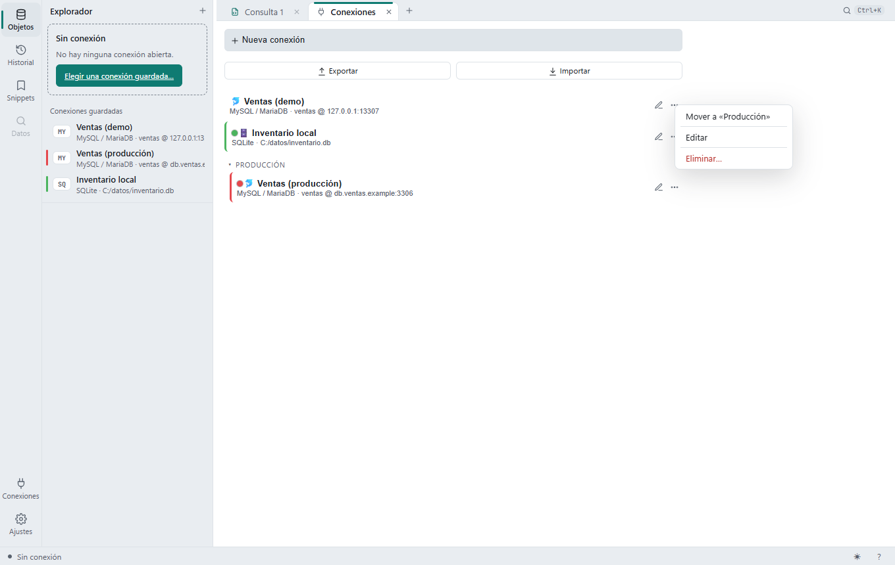
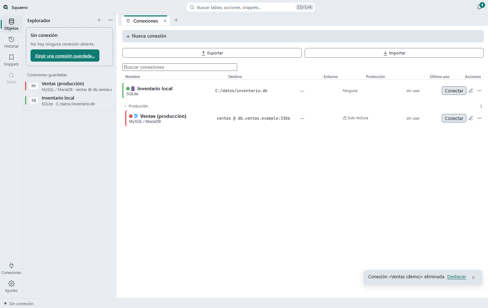
Llevártelas a otro equipo
Exportar, en la misma pestaña, guarda tus conexiones en un JSON. La casilla Incluir contraseñas hace justo eso, y te avisa de lo que implica: quedan en texto plano dentro del archivo. Sin marcarla, el archivo es seguro de compartir y cada quien pone su contraseña al conectar.
Varias conexiones a la vez
Puedes tener abiertas todas las que quieras, y la barra lateral las lista todas: una fila por conexión, con su motor y a qué servidor apunta. Un clic en una fila cambia el foco a esa conexión — no abre ni cierra nada—, y el explorador de debajo le da a cada una su propia sección plegable, así que la misma tabla se puede mirar en producción y en pruebas sin cambiar de sitio.
Cada fila lleva su ⏏ para cerrar esa conexión, y si el servidor deja caer la sesión la fila lo dice y ofrece reconectar sin perder las pestañas que colgaban de ella.
Cada pestaña recuerda con qué conexión nació y sigue trabajando contra ella aunque cambies el foco a otra, así que una consulta de pruebas no se ejecuta sola en producción por haber cambiado de conexión en la barra.
3. Trabajar sin riesgos
Proteger una conexión
En el formulario de cada conexión, Protección tiene tres valores:
- Ninguna: lo normal.
- Confirmar escrituras: antes de escribir, la app enseña la lista de sentencias que va a enviar y pide confirmación una vez por acción, con el botón Escribir.
- Solo lectura: cualquier sentencia que escriba (DML, DDL, editar filas en la rejilla) se rechaza antes de enviarla al servidor.
La protección vale para todo lo que sale de la app hacia esa conexión: el
editor, la edición de la rejilla y los asistentes (sincronizar, importar,
generar datos, diseñar tablas, restaurar). Lo que no puede demostrar que solo
lee lo trata como una escritura: SET, CALL y
EXEC escriben, y también un EXPLAIN ANALYZE de una
escritura o un SELECT … INTO. En MongoDB solo leen
find y aggregate, y un aggregate con
$out o $merge escribe.
No sustituye a un usuario de solo lectura. La app no puede saber si una función llamada desde un SELECT escribe algo. Para producción, lo seguro de verdad sigue siendo conectar con un usuario sin permisos de escritura.
El color de la conexión la distingue en la lista de conexiones, en las pestañas y en la franja sobre el área de trabajo, que además sale rayada si la conexión está protegida. Usa el rojo para producción: no activa la protección por sí solo, pero se ve siempre en qué conexión estás.
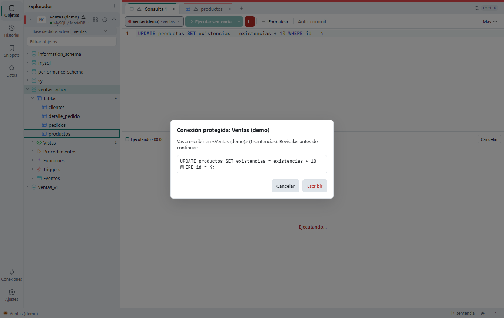
Transacciones manuales
Por omisión cada sentencia se guarda al ejecutarse (Auto-commit). El interruptor de la barra del editor la pasa a Transacción manual, para esa conexión y todas sus pestañas: la primera sentencia que modifica datos abre una transacción y nada queda guardado hasta que lo confirmes.
- Mientras está abierta, la barra dice En transacción · n, con los botones Confirmar (Ctrl+Alt+C) y Revertir (Ctrl+Alt+R).
- Si desconectas con una abierta, la app pregunta antes.
- Con una transacción abierta, la rejilla no deja editar: sus cambios van en su propia transacción.
- MySQL y MariaDB confirman solos al ejecutar DDL; la app avisa cuando pasa.
- Funciona en los seis motores. En MongoDB necesita un replica set o un mongos; contra un servidor suelto se rechaza con su mensaje.
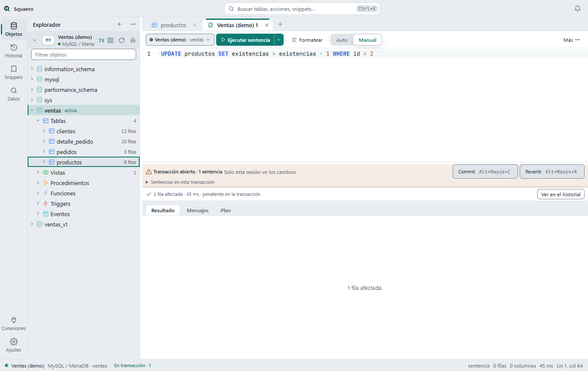
Cancelar una consulta
Mientras una consulta se ejecuta, la rejilla dice Ejecutando… y ofrece
Cancelar, que detiene la consulta en el servidor, no solo en pantalla.
En Informix (por DRDA) cancelar corta la conexión, y la app ofrece
reconectar; en MongoDB se cancelan find y
aggregate, y las escrituras llegan hasta el final. Si un motor no
puede cancelar, el botón lo dice.
Keep-alive y reconexión
Keep-alive (segundos), en el formulario de la conexión, sondea el servidor mientras la conexión está ociosa; vacío o 0 lo desactiva. Si la conexión se cae y no había una transacción abierta, la app reconecta sola («reconectando…», luego «reconectada») y, si era una lectura, repite la operación una vez. Con una transacción abierta nunca reconecta sola: lo que no se confirmó se perdió en el servidor, y la app te lo dice en vez de disimularlo.
4. Explorar el esquema
El árbol de objetos
La barra lateral agrupa por tipo: Tablas, Vistas, Procedimientos, Funciones, Triggers y Eventos. Las carpetas cargan cuando las abres, así que un esquema de miles de objetos no cuesta nada al conectar.
- Filtrar objetos… acota el árbol mientras escribes.
- Refrescar (F5) vuelve a leer el esquema y los datos.
Qué hay en el clic derecho
Sobre una tabla: Abrir datos, Ver estructura, Modificar tabla…, Índices y constraints…, Importar datos…, Copiar nombre y Nueva tabla…. Sobre una vista, un procedimiento, una función o un trigger: Ver definición… y Editar definición…. El menú se adapta al objeto — lo que no aplica, no aparece.
La lista de objetos
El botón Objetos de la barra superior abre la base activa como una tabla: Nombre, Tipo, Filas, Tamaño y Comentario, con filtro por tipo. Doble clic abre los datos. Sirve para lo que el árbol hace mal: ordenar por tamaño, buscar la tabla más grande, ver de un vistazo cuántas filas tiene cada cosa.
En MongoDB esta lista no aplica: no hay catálogo SQL que consultar. Usa el árbol de objetos, que muestra las colecciones.
Encontrar cualquier cosa
Ctrl+K abre Buscar o ejecutar: escribe el nombre de una tabla, de una herramienta o de una acción y ejecútala desde ahí. Ctrl+P busca solo objetos: tablas, vistas, rutinas.
Buscar un texto en todos los datos
La herramienta Buscar en los datos (en el menú de herramientas o con Ctrl+K) busca un texto en todas las tablas de la base activa, o en las que marques:
- Coincidencia: contiene, empieza por o exacta; y Ignorar mayúsculas.
- También columnas numéricas (valor exacto) busca el número en las columnas numéricas.
- Filas por tabla limita cuántas coincidencias trae de cada una (100 por omisión); si una tabla llega al límite, lo dice.
Hace una consulta limitada por tabla, una tras otra, con el avance a la vista, y se puede cancelar. Abrir coincidencias lleva a las filas encontradas. No está disponible en MongoDB, y se salta las columnas de arrays y los textos largos de Informix (TEXT/CLOB) y SQL Server (text/ntext).
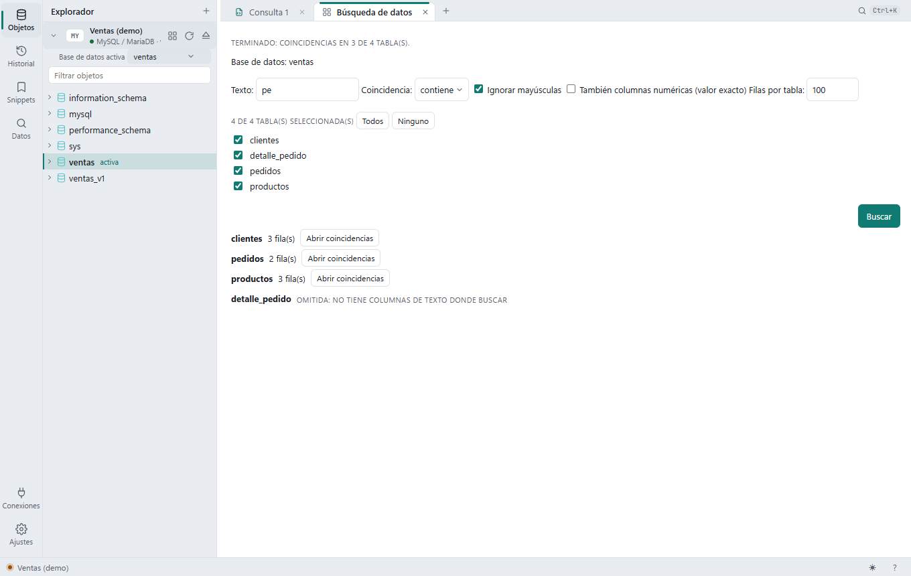
El árbol, al instante
Squaero recuerda en tu equipo los nombres de bases, tablas y columnas de cada conexión, así que al volver el árbol aparece enseguida, con la marca Desde caché mientras lo relee del servidor. F5 lo vuelve a leer todo, y el DDL que ejecutas desde el editor invalida lo que toca.
5. Escribir y ejecutar SQL
Ejecutar
- Abre una pestaña con Consulta o Ctrl+T.
- Escribe. El editor sugiere tablas y columnas de la conexión activa, además de palabras clave; Ctrl+Espacio abre las sugerencias a mano.
- Ctrl+Enter ejecuta.
Qué se ejecuta: si hay texto seleccionado, la selección; si no, la sentencia donde está el cursor; y si toca, el documento entero. La barra de estado dice cuál de las tres fue, junto con las filas y el tiempo que tardó.
Formatear
Ctrl+Shift+F, o el botón Formatear. Usa el dialecto del motor de la conexión activa. Una consulta de MongoDB la deja intacta a propósito: mongosh no es SQL.
Ver el plan
Plan (Ctrl+Shift+E) ejecuta el EXPLAIN del motor y lo dibuja como árbol, en vez de dejarte leer la salida cruda.
Historial y snippets
- Historial guarda lo que has ejecutado con su duración y marca las lentas. Desde ahí se reejecuta en una pestaña nueva.
- Guardar (Ctrl+Shift+S) convierte la consulta en un snippet con nombre. Guarda la selección, la sentencia o el documento, según lo que tengas.
- Ctrl+J abre la paleta de snippets: Enter lo abre, Shift+Enter lo ejecuta, Ctrl+Enter lo inserta en el cursor.
- El panel Snippets los busca por nombre o por lo que hacen, y permite renombrar, duplicar, borrar, e importar / exportar el set completo como JSON para compartirlo con el equipo.
El constructor visual
Si no quieres escribir el SQL: elige Tabla, marca Columnas (vacío = todas), añade Condiciones combinadas con Y/O, un Ordenar por y un Límite. El SQL generado se ve todo el tiempo, así que también sirve para aprender la sintaxis del motor.
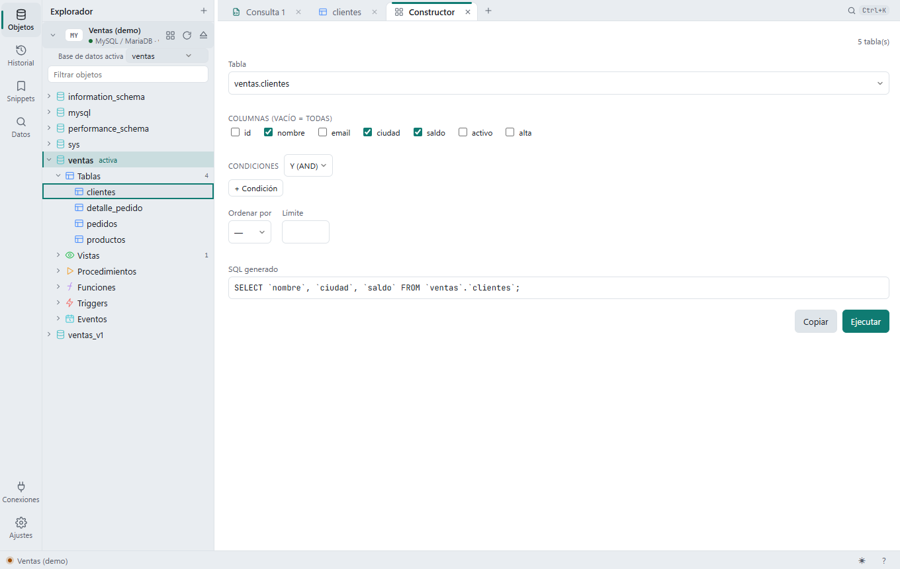
El notebook
Para un análisis que quieras contar, no solo ejecutar: celdas de SQL y
de Markdown intercaladas, con el resultado debajo de cada una.
Los Parámetros se sustituyen en el SQL como :nombre antes
de ejecutar, hay Ejecutar todo, y el conjunto se exporta a Markdown o
a HTML.
MongoDB
No es SQL: las consultas se escriben al estilo de mongosh y los documentos se aplanan para caber en la rejilla.
- Leer:
find,findOne,aggregate,countydistinct, y.explain()para ver el plan. - Escribir:
insertOne/insertMany,updateOne/updateMany,replaceOne,deleteOne/deleteMany. Las colecciones se vacían, se renombran y se eliminan desde el clic derecho del árbol, y los índices desde Índices y constraints. - Editar en la rejilla funciona como en cualquier tabla, con
_idcomo clave primaria. - Las transacciones necesitan un replica set o un clúster con mongos.
- El monitor de servidor usa
currentOpykillOp, y las consultas lentas vienen del profiler, que hay que encender condb.setProfilingLevel(1, 100).
No hay, en MongoDB, gestión de usuarios, búsqueda en los datos ni comparación de esquemas.
6. El editor, a fondo
Completado según el contexto
El editor entiende la consulta que escribes: sabe que o es el
alias de pedidos, qué columnas devuelve una CTE y cuáles una
subconsulta, así que después de o. sugiere justo esas. Después
de JOIN … ON propone las condiciones a partir de las claves
foráneas reales, y los identificadores se citan como pide cada motor.
Ctrl+Espacio abre las sugerencias a mano.
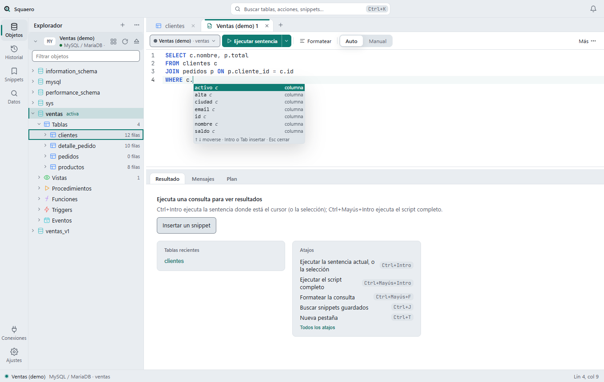
c. el editor sugiere solo las columnas de clientes, la tabla con ese alias.Problemas marcados mientras escribes
Al dejar de teclear, el editor subraya lo que va a fallar o lo que probablemente no quieres, y al pasar el ratón dice por qué:
- tabla o columna desconocida, y columna ambigua (cuando existe en dos tablas de la consulta);
UPDATEoDELETEsinWHERE, que tocan todas las filas;- un
INSERTcon distinto número de valores que de columnas.
Nunca impide ejecutar, y calla mientras el esquema no está cargado. Se apaga en Ajustes con Marcar problemas en el editor SQL.
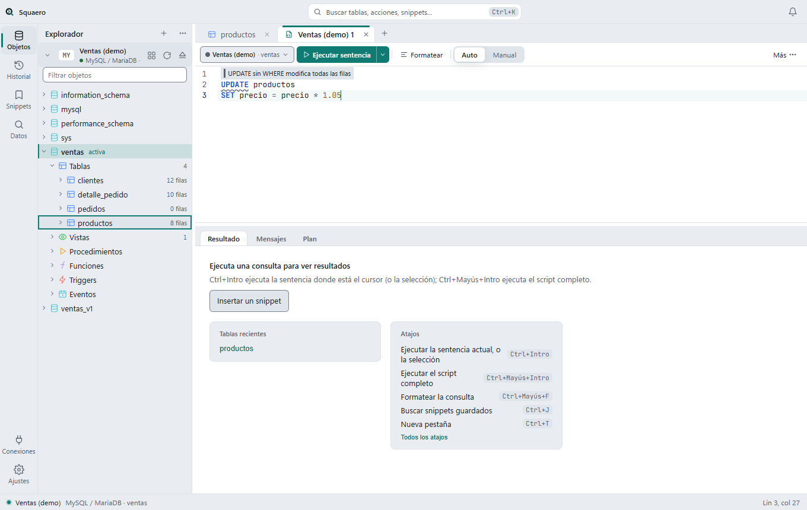
Ir a la definición, buscar usos y renombrar
| Acción | Atajo |
|---|---|
| Ir a la definición de la tabla o la rutina bajo el cursor. | F12 o Ctrl+clic |
| Buscar usos: marca cada aparición en el script; F3 y Mayús+F3 las recorren y Esc las quita. | Mayús+F12 o Alt+F7 |
| Renombrar un alias, una CTE o un identificador en todo el script. | F2 o Mayús+F6 |
Las tres están también en el clic derecho del editor. Renombrar solo cambia el texto de la consulta: nunca renombra un objeto de la base.
Varios cursores
- Ctrl+D añade la siguiente coincidencia de la selección; Ctrl+Shift+L las selecciona todas.
- Ctrl+Alt+↑ / ↓ añade un cursor arriba o abajo, y Ctrl+clic otro donde pulses (sobre un nombre que se puede seguir, Ctrl+clic va a su definición).
- Alt+arrastrar hace una selección rectangular.
- Esc vuelve a un solo cursor.
Plantillas por abreviatura
Escribe una abreviatura y pulsa Tab: sel,
ins, upd, del y cte se
convierten en el esqueleto de un SELECT, un INSERT, un UPDATE, un DELETE o
una CTE, y Tab salta al siguiente hueco por rellenar. También
salen en la lista de completado, marcadas como plantilla.
Cualquier snippet puede ser una plantilla: dale una Abreviatura al guardarlo. Una tuya con el mismo nombre que una integrada gana; las integradas se apagan en Ajustes.
Historial local de cada pestaña
Cada pestaña de consulta guarda versiones de su texto: al ejecutar, cada dos minutos mientras cambia y al cerrarla. Historial local…, en el clic derecho de la pestaña o del editor, las enseña con las diferencias respecto al texto actual, también las de pestañas ya cerradas; desde ahí se Restaura una versión o se abre en una pestaña nueva.
Por omisión guarda 50 versiones por pestaña durante 30 días; los dos límites se cambian en Ajustes, y 0 versiones lo apaga y borra lo guardado. Una versión de más de 100 000 caracteres no se guarda, y la app avisa.
7. Ver y editar datos
Abrir una tabla
Doble clic en el árbol, o Abrir datos en su menú. La pestaña abre con el panel Filtro plegado sobre la rejilla. Si esa tabla ya está abierta, volver a pulsarla te lleva a su pestaña en vez de crear otra —y no vuelve a ejecutar la consulta, para no tirar los cambios que tuvieras sin confirmar. Para releer los datos, F5.
Filtrar y ordenar (en el servidor)
Esto es lo importante: el filtro del panel se traduce a WHERE y
ORDER BY reales, así que trabaja sobre toda la tabla, no
sobre las filas que ya se descargaron.
- + condición: elige Columna, Operador y Valor.
- Añade las que necesites y di cómo se combinan: y / o.
- + orden para ordenar por una o varias columnas, ascendente o descendente.
- Aplicar. Limpiar deja la tabla como estaba.
Operadores disponibles: =, ≠, <,
>, ≤, ≥, como,
contiene, entre, está en la lista, es nulo y
no es nulo. El botón SQL abre en otra pestaña la consulta que
el panel acaba de construir, por si quieres seguir a mano desde ahí.
Atajo: clic derecho sobre una celda → Filtrar: columna = valor (o ≠, contiene, <, >; en una celda vacía, es nulo / no es nulo). Añade esa condición al panel y la aplica; repítelo en otra celda para afinar. Quitar filtros y orden vuelve a la tabla entera.
Los filtros de la cabecera de cada columna en la rejilla son otra cosa: esos afinan solo las filas ya cargadas. La propia rejilla lo avisa cuando el resultado viene truncado.
Paginar
‹ Anterior y Siguiente › en la barra de estado, que también
muestra el rango («Filas 201–400»). Es paginación real por
OFFSET, no un recorte de lo descargado.
Editar sin sustos
Los cambios se acumulan en una transacción y no tocan la base hasta que los confirmas:
- Doble clic en una celda para editarla. Fila añade una fila nueva; el icono de borrar marca una fila para eliminación (y se puede deshacer).
- El botón Confirmar (n) lleva la cuenta de los cambios pendientes. Al pulsarlo se ve el SQL exacto que se va a ejecutar.
- Aplicar y confirmar hace el commit. Descartar tira todo.
Poner NULL está en el clic derecho sobre la celda. Hace falta porque
vaciar la casilla no es lo mismo: eso escribe una cadena vacía, que es otro
valor. Una celda con NULL —el que ya estaba o el que acabas de poner— se
muestra vacía pero con NULL escrito en gris dentro. Si la
columna es NOT NULL, lo rechaza el motor con su propio error: la rejilla no
puede saberlo de antemano.
Solo lectura sin clave primaria. Si la tabla no tiene PK, la rejilla no deja editar: no habría forma de identificar la fila sin riesgo de actualizar de más. El panel lo dice en vez de fallar al guardar.
Registros anchos: el detalle de fila
Cuando la tabla tiene cuarenta columnas, la rejilla se queda corta. Ver detalle de fila abre esa fila como formulario, con Fila anterior / Fila siguiente para recorrerlas y Esc para cerrar. Se puede editar desde ahí igual que en la rejilla.
Seguir una llave foránea
- En una celda que es FK, el selector muestra los registros de la tabla referenciada y guarda el valor que elijas: se acabó copiar identificadores a mano.
- La flecha de la celda abre Datos relacionados: todas las tablas que referencian ese valor, con cuántas filas tiene cada una. Desde ahí se abre en pestaña o se manda al editor.
Marcar filas y llevarlas a otro lado
Cada fila lleva su número a la izquierda, y al pasar el ratón ese número se convierte en una casilla. La casilla de la cabecera marca o desmarca todas las filas que se estén viendo, y Mayús+clic en una casilla marca el rango desde la última que tocaste. También valen Ctrl+clic, Mayús+clic sobre la fila y Ctrl+A; Esc desmarca.
Con filas marcadas aparece una barra sobre la rejilla: Copiar (Ctrl+C), Copiar como INSERT, Duplicar (Ctrl+D) y Pegar. Las mismas acciones, más Transferir a otra tabla…, están en el clic derecho, y funcionan también con una sola fila.
Copiar filas y pegarlas como filas nuevas
Copiar guarda las filas tal cual, con sus NULL, además del texto que reciben otros programas. Al pegarlas sobre una tabla (Ctrl+V) se añaden abajo como filas nuevas sin guardar: se pueden editar celda a celda y quitarse con su ✕. Los valores se colocan por nombre de columna, así que sirve para copiar de una tabla a otra.
La barra de filas pendientes decide qué pasa con la clave primaria: la genera la base (lo normal al pegar en la misma tabla) o conservar la copiada. Si un valor ya existe —la clave, o una columna con índice único— la celda se marca en rojo y no deja guardar hasta corregirla. Lo que no se puede saber de antemano lo dice la base al guardar, señalando la fila que falló.
Revisar y guardar (Ctrl+S) enseña el SQL antes de ejecutarlo, como cualquier otra edición; Descartar las tira.
Fijar un resultado y compararlo
Fijar resultado guarda el resultado actual en la pestaña (hasta cinco) sin volver a ejecutarlo. Después, Comparar con… enfrenta el resultado nuevo con uno fijado: empareja las filas por su clave o por posición y enseña solo las añadidas, las quitadas y las que cambiaron, con las iguales ocultas. Compara las filas que hay cargadas, y lo dice.
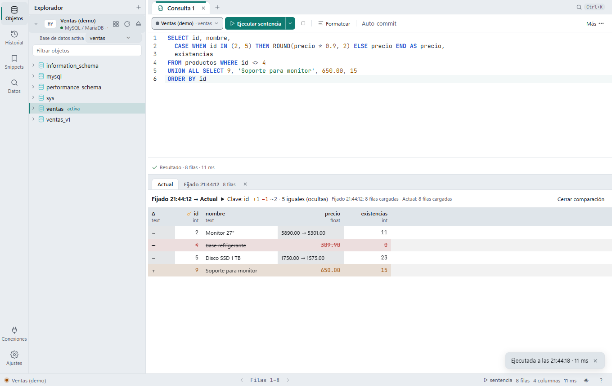
Resumen de la selección
Al seleccionar un bloque de celdas (Mayús+flechas, Mayús+clic o arrastrando), o una columna en varias filas marcadas, la barra de estado cuenta las celdas y los NULL y, si la columna es numérica, da la suma, la media, el mínimo y el máximo, sin errores de redondeo.
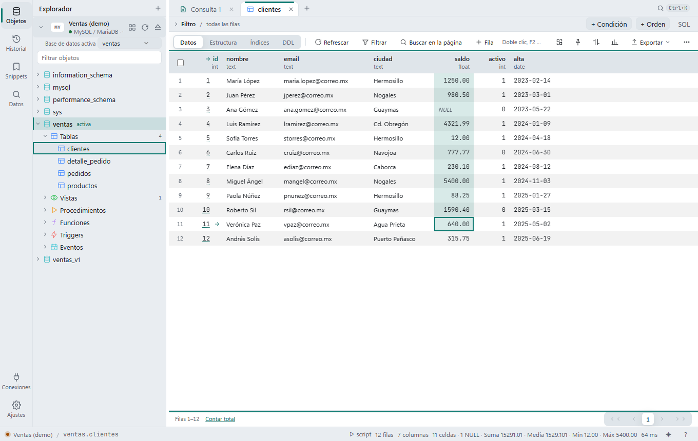
Vista transpuesta
Transponer pone las columnas en vertical: cada fila es una columna de la tabla. Usa las filas marcadas, o la seleccionada, o la página entera, con un máximo de 100 filas lado a lado.
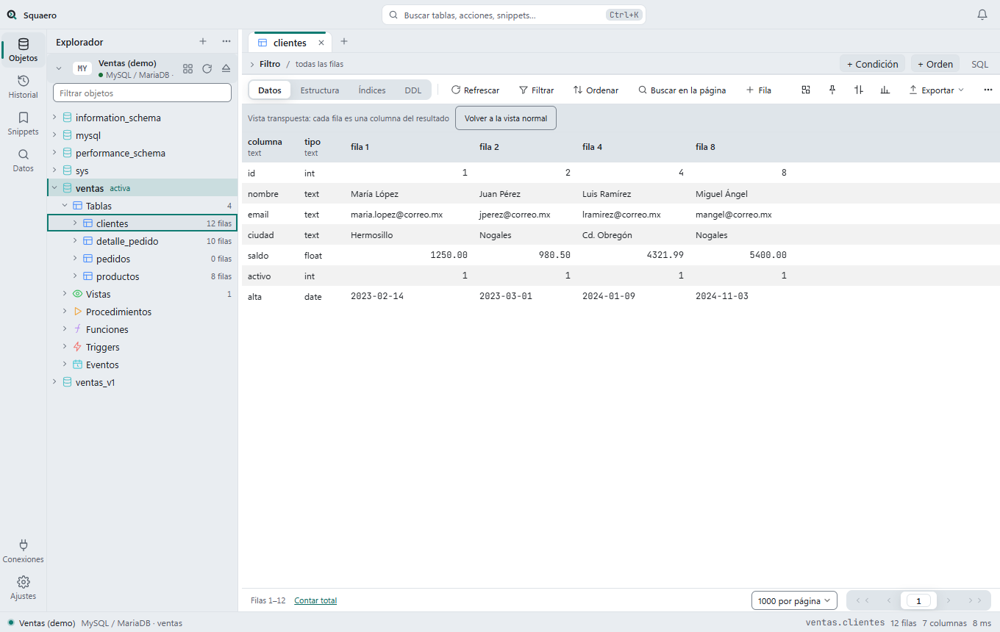
Graficar el resultado
Graficar convierte el resultado en barras, líneas o pastel: eliges la columna de etiquetas y una o varias columnas numéricas.
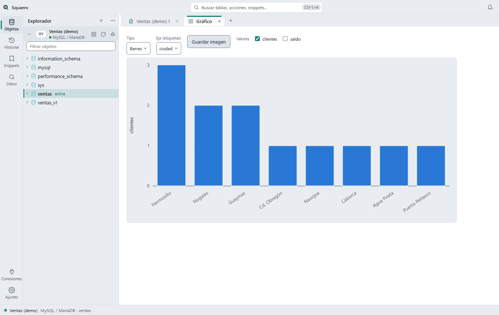
8. Importar y exportar
Exportar un resultado
Exportar, en la barra del objeto, guarda lo que tengas en la rejilla como CSV, JSON, SQL (INSERTs), XML, HTML o XLSX. Vale para el resultado de cualquier consulta, no solo para una tabla.
Importar un archivo a una tabla
- Importar datos… en el menú de la tabla, o Importar en la barra del objeto.
- Elige el archivo: CSV, JSON o XLSX.
- Revisa la vista previa y el mapeo de columnas — se propone por cabecera, y se puede corregir columna por columna.
- Aplica. Todo entra en una sola transacción: o carga completa, o no carga nada.
Pegar desde una hoja de cálculo
Copia las filas en Excel o en Google Sheets y pégalas sobre la tabla. Si traen tantas columnas como la rejilla, entran como filas nuevas sin guardar (ver «Copiar filas y pegarlas como filas nuevas»), con la opción de tratar las celdas vacías como NULL.
Cualquier otra forma —otro número de columnas, una cabecera que no coincide o más de 500 filas— abre el asistente de importación: misma vista previa, mismo mapeo por cabecera y misma transacción que un archivo. Desde la barra de filas pendientes también se puede mandar el pegado al asistente.
9. Diseñar y administrar
Tablas
Nueva tabla… abre el diseñador; Modificar tabla… abre la misma
pantalla sobre una tabla existente y genera el ALTER.
Índices y constraints… gestiona los índices, las claves y las
restricciones.
Rutinas, triggers y eventos
Los exploradores de Procedimientos y funciones y de Triggers y eventos listan los objetos con un buscador (por nombre, o por la tabla a la que pertenecen) y muestran su definición al seleccionarlos. Abrir en editor la lleva a una consulta nueva para modificarla.
Usuarios y permisos
El panel lista las cuentas del servidor con un buscador y dos filtros útiles: Sólo superusuarios y Ocultar cuentas del sistema. Un distintivo marca quién tiene SUPER y quién puede otorgar permisos a otros.
- Nuevo usuario: nombre, host (
%olocalhost) y contraseña opcional. - Al seleccionar un usuario se ven sus permisos, y se pueden
Otorgar / Revocar eligiendo privilegios y Ámbito
(
*.*,midb.*,midb.tabla). El SQL resultante se muestra antes de ejecutarlo.
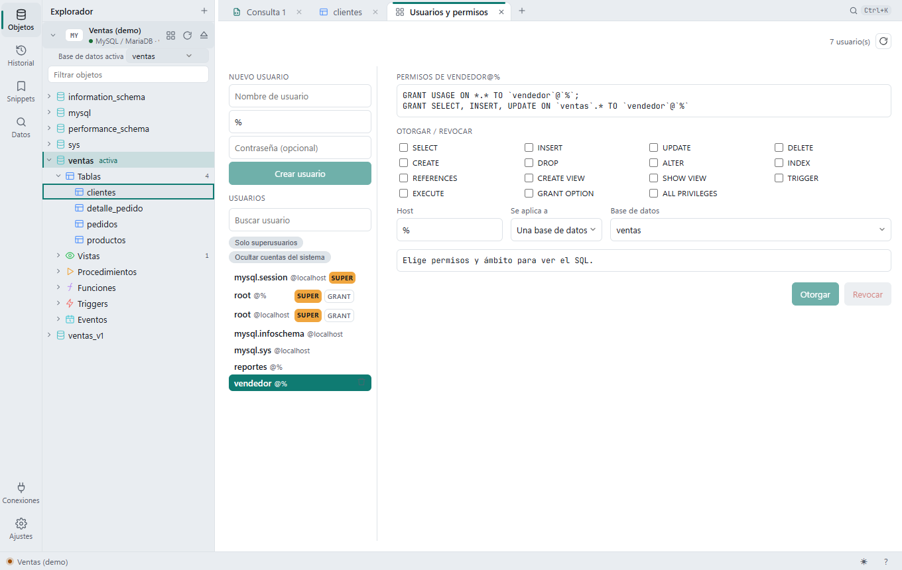
Diagrama ER
Dibuja las tablas y sus relaciones a partir de las llaves foráneas reales del motor. Arrastra las cajas para reorganizar, usa −/+ para el zoom y Reordenar para volver a la cuadrícula.
Si el motor no expone llaves foráneas, el diagrama las infiere por
convención de nombres (cliente_id → clientes)
y lo dice en la propia pantalla: relaciones «inferidas», no reales. También
avisa si la lista quedó incompleta por llegar al límite de filas.
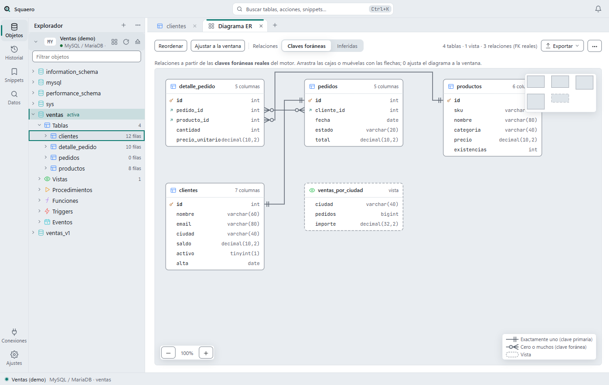
10. Vigilar el servidor
Monitor de servidor
La lista de sesiones activas, sobre la misma rejilla que los resultados —así que se filtra, se ordena y se exporta igual. Selecciona una fila y Matar sesión la termina.
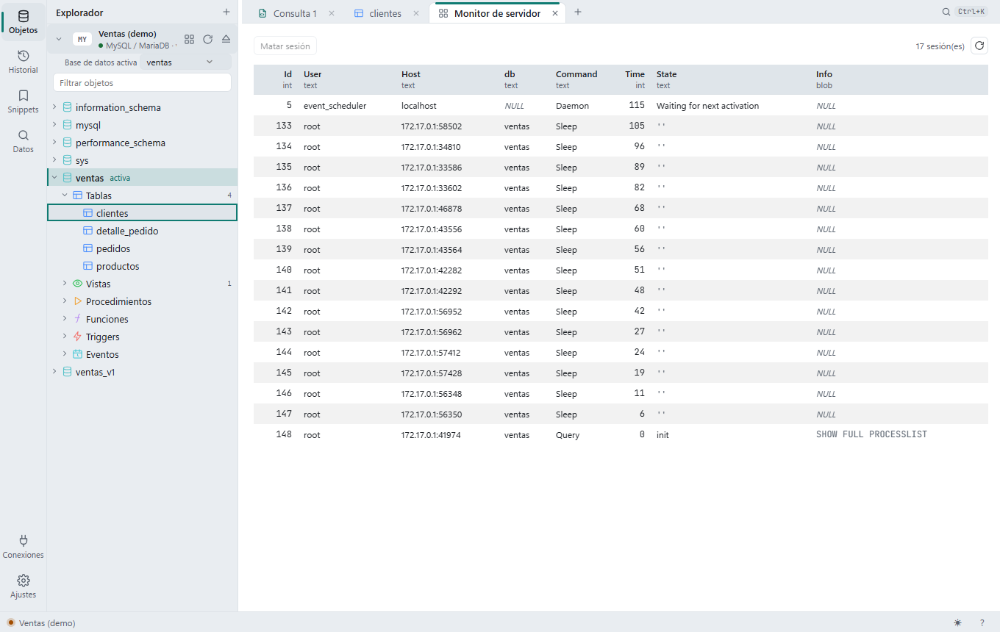
Consultas lentas
Lo que el servidor haya registrado, ordenable por Latencia media, Latencia total o Nº ejecuciones. De cada una: Abrir en el editor o ver su EXPLAIN. Reiniciar stats pone el contador del servidor a cero para medir desde ahora.
11. Comparar y mover entre bases
Comparar esquemas y generar la migración
Sincronizar › Estructura… compara el esquema de la conexión activa con el de otra.
- Elige Destino, su Base de datos y su Esquema. Si quieres que el script borre las tablas que solo existen en el destino, marca Generar DROP TABLE.
- Comparar enseña las diferencias por tipo: tablas, columnas, claves primarias, restricciones únicas, índices, claves foráneas, restricciones CHECK y vistas, y aparte lo que el motor destino no soporta.
- El Script de migración va ordenado por dependencias: primero se quitan vistas y claves foráneas, después se crean las tablas referenciadas antes que las que las referencian, y las claves foráneas y las vistas se añaden al final. Así un ciclo de claves foráneas no lo rompe.
- Abrir en el editor, Guardar .sql o Aplicar en destino, que pregunta antes y lo ejecuta en una transacción. MySQL y MariaDB no pueden deshacer el DDL que ya se ejecutó.
No compara MongoDB, ni los valores por omisión de SQL Server, y se salta los índices sobre expresiones o parciales. SQLite no puede cambiar una columna o una restricción en su sitio: la comparación lo señala.
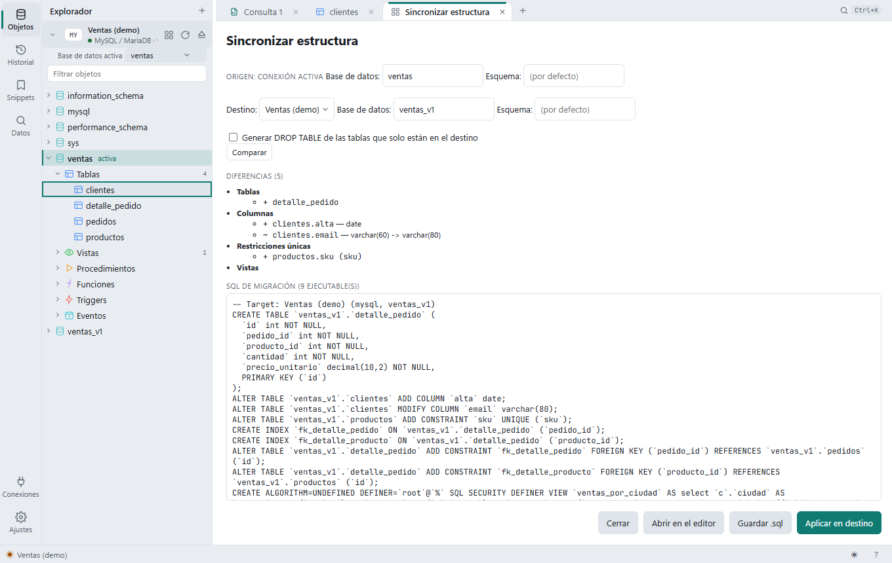
Tu esquema en git: volcar el DDL a una carpeta
En Respaldo y restauración, Volcar DDL a una carpeta… escribe un
archivo .sql por objeto, en carpetas tables/,
views/, procedures/, functions/,
triggers/ y events/. El resultado es el mismo cada
vez para el mismo esquema, así que un git diff enseña solo lo que
cambió. Si el sistema no ofrece elegir carpeta, el botón es Volcar DDL a un
.zip…, con el mismo árbol dentro.
Los archivos de objetos que ya no existen no se borran: limpia la carpeta antes si quieres reflejar borrados. Las rutinas y los triggers se incluyen en MySQL/MariaDB, SQLite (triggers) e Informix; en el resto, tablas y vistas.
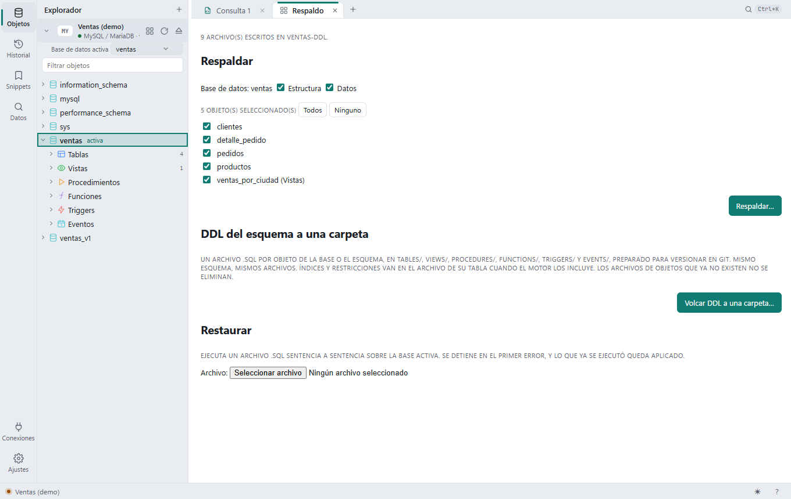
Mover datos
- Sincronizar › Datos… hace lo mismo con el contenido de las tablas.
- Transferir copia una tabla —o las filas que hayas marcado— a otra conexión.
- Generar datos llena una tabla con datos de prueba coherentes con sus tipos.
Todas son operaciones que escriben: enseñan lo que van a hacer antes de hacerlo. Léelo, sobre todo si el destino es una base que le importa a alguien.
12. Atajos de teclado
F1 muestra esta misma lista dentro de la app, generada desde el código, así que nunca se desincroniza. En macOS, Ctrl es ⌘ salvo para cambiar de pestaña.
| Acción | Atajo |
|---|---|
| General | |
| Paleta de comandos | Ctrl+K |
| Buscar objetos (tablas, vistas…) | Ctrl+P |
| Nueva pestaña | Ctrl+T |
| Cerrar la pestaña activa | Ctrl+W |
| Siguiente pestaña | Ctrl+AvPág |
| Pestaña anterior | Ctrl+RePág |
| Refrescar datos y árbol | F5 |
| Cambiar tema claro/oscuro | Ctrl+Alt+L |
| Acercar / alejar / restablecer el zoom | Ctrl++ Ctrl+- Ctrl+0 |
| Mostrar / ocultar los atajos | F1 |
| Editor | |
| Ejecutar la consulta | Ctrl+Enter |
| Formatear la consulta | Ctrl+Shift+F |
| Autocompletar | Ctrl+Espacio |
| Buscar en el editor | Ctrl+F |
| Guardar la consulta como snippet | Ctrl+Shift+S |
| Buscar snippets guardados | Ctrl+J |
| Ir a la definición | F12 |
| Buscar usos | Shift+F12 |
| Renombrar en el script | F2 |
| Añadir la siguiente coincidencia / seleccionar todas | Ctrl+D Ctrl+Shift+L |
| Añadir un cursor arriba / abajo | Ctrl+Alt+↑ Ctrl+Alt+↓ |
| Expandir una plantilla / siguiente hueco | Tab |
| Confirmar / revertir la transacción abierta | Ctrl+Alt+C Ctrl+Alt+R |
| Rejilla | |
| Marcar todas las filas | Ctrl+A |
| Seleccionar un bloque de celdas | Shift+↑↓←→ |
| Copiar filas marcadas o celdas | Ctrl+C |
| Duplicar las filas marcadas | Ctrl+D |
| Pegar filas como filas nuevas | Ctrl+V |
| Ver la fila relacionada (clave foránea) | Ctrl+B |
| Marcar para borrar (en edición) | Supr |
| Revisar y guardar los cambios | Ctrl+S |
| Desmarcar | Esc |
| Filtro de una tabla | |
| Abrir el filtro con una condición nueva | Ctrl+Shift+L |
| Abrir el filtro con un orden nuevo | Ctrl+Shift+O |
| Añadir otra condición | Shift+Enter |
Los atajos generales se pueden cambiar en Ajustes › Atajos de teclado. Ctrl+D y Ctrl+Shift+L hacen una cosa en el editor y otra en la rejilla o en una tabla, según dónde esté el foco. Nueva pestaña y cerrar siguen funcionando también con Alt (Ctrl+Alt+T, Ctrl+Alt+W).
13. Si algo va mal
Se cayó la conexión
Si el servidor cierra la sesión —por inactividad, porque alguien la mató, o porque se fue el túnel— y no había una transacción abierta, la app reconecta sola y, si lo que falló era una lectura, la repite una vez. Si no puede, o si había una transacción abierta, te lo dice: la conexión pasa a desconectada en rojo y sale un aviso con el botón Reconectar. Tus pestañas y lo que tuvieras escrito en ellas no se pierden.
Sin keep-alive, la caída se detecta cuando algo va al servidor; con él, la app sondea mientras la conexión está ociosa (ver «Keep-alive y reconexión»).
No conecta
El error trae el motivo que devolvió el motor; empieza por ahí. Lo que más se repite:
- Informix: el campo Servidor (INFORMIXSERVER) es obligatorio y no es lo mismo que el host. Puerto / servicio acepta el número o el nombre del servicio.
- MongoDB: si el usuario no está en la misma base, hay que poner la
Base de autenticación (casi siempre
admin). - SQL Server: usa Puerto o Instancia, no los dos. Una instancia con nombre se busca a través del servicio SQL Browser, que tiene que estar en marcha en el servidor. Por un túnel SSH pon el Puerto: la instancia con nombre no funciona a través del túnel.
- Por SSH: prueba primero el túnel con tu cliente SSH de siempre. Si la clave del host cambió, la política aceptar y recordar rechaza la conexión a propósito.
Una operación que el motor no soporta
Squaero no finge. Si un motor no puede hacer algo, la app devuelve un error explícito en vez de aparentar que funcionó — y en varios sitios (datos relacionados, lista de objetos, diagrama ER) el propio panel explica por qué la acción no está disponible.
Reportar un fallo
En GitHub Issues. Ayuda mucho decir el motor y su versión, la versión de Squaero (está en Acerca de) y qué esperabas que pasara.
14. En el iPhone
La app de iPhone usa el mismo núcleo y los mismos drivers que escritorio, con pantallas pensadas para el teléfono. Lleva SQLite, PostgreSQL, Informix y MongoDB; MySQL y SQL Server llegan cuando tengan su propio cliente, porque los de ahora no se pueden distribuir en la App Store. Está en preparación: todavía no se publica.
Probar sin servidor
En Conexiones, Base de demostración abre una base SQLite de ejemplo. Sirve para explorar, editar, consultar y exportar sin configurar nada. Desliza la fila y Restablecer la deja como venía.
Conexiones
- + crea una con los mismos campos que en escritorio; el botón de importar trae el archivo de conexiones exportado desde escritorio.
- Las contraseñas y las claves SSH van al llavero de iOS, protegidas con Face ID o el código. Si prefieres no guardarlas, se piden al conectar.
- El certificado de la CA (TLS verificado) y los archivos SQLite se eligen en Archivos.
- Para un servidor de tu red local, iOS pide permiso la primera vez. Si dijiste que no: Ajustes › Privacidad y seguridad › Red local › Squaero.
- El interruptor Producción marca la conexión con el rojo de escritorio: cada cambio lo advierte antes de pedir Face ID.
- Al volver del segundo plano, iOS ya cerró la conexión: la app lo dice y ofrece Reconectar.
Explorar y editar
Tablas, vistas y rutinas con buscador. Una tabla se ve como tarjetas; el filtro y el orden se aplican en el servidor y las páginas llegan del cursor al bajar. Tocar una fila la abre como formulario, con sus datos relacionados en los dos sentidos.
Editar o Eliminar fila muestran primero la sentencia exacta y cuántas filas toca; solo se ejecuta tras Face ID, dentro de una transacción, y se confirma únicamente si afectó a esa fila. Si el servidor la rechaza, se deshace y el cambio queda en pantalla para corregirlo. MongoDB y las tablas sin clave primaria son de solo lectura.
Consultas y snippets
La pestaña Consultas trabaja sobre la conexión abierta: resaltado,
completado de tablas y columnas, y una fila de teclas SQL sobre el teclado.
Ejecuta la selección o todo el texto, sentencia por sentencia, y muestra la
última con su número de filas y su tiempo. Las variables :nombre y
${nombre} se piden antes de ejecutar, con los valores de la vez
anterior. Snippets guarda consultas con nombre y las ejecuta con un
toque.
Pedir un filtro, datos o un cambio
Con el asistente encendido (Ajustes › Asistente › Asistente en el iPhone, apagado por omisión), una tabla ofrece Pedir un filtro: escribe, por ejemplo, «solo las programadas de mañana», y el filtro se aplica en el servidor como cualquier otro, con columnas reales. Pedir datos responde a una pregunta con una consulta de solo lectura, y Pedir un cambio rellena la edición de una fila y abre la vista previa: nada se guarda sin tu confirmación con Face ID.
Lo resuelve el modelo que Apple ejecuta en el propio iPhone; nada sale del dispositivo. Necesita iOS 26 con Apple Intelligence. Qué ve el modelo en cada caso está en la política de privacidad.
Exportar
Desde una tabla o un resultado: CSV, JSON, XLSX, XML, HTML o SQL, con todas las filas (se leen del cursor, sin volver a consultar) o solo las visibles, a Archivos o a Compartir.
Licencias
Ajustes › Licencias lista cada componente de terceros de la app con su versión y el texto completo de su licencia.
15. Con un asistente de IA (MCP)
quaero-mcp es un programa aparte que da a un cliente del
Model Context Protocol
—un asistente de IA que uses en tu equipo— acceso a tus bases, con el mismo
núcleo y los mismos drivers que la app. Corre en tu equipo y habla con el
cliente por la entrada y la salida estándar.
- Exporta tus conexiones desde la pestaña de conexiones (Exportar).
- En ese archivo, añade
"mcp": truea cada conexión que quieras exponer. Sin esa marca, una conexión no existe para el asistente. - Registra el servidor en tu cliente MCP; por ejemplo, en Claude Code:
claude mcp add quaero -- quaero-mcp --connections connections.json.
El asistente puede listar las conexiones (sin contraseñas), recorrer el
esquema, describir una tabla y ejecutar SQL, con 200 filas como máximo por
omisión. Solo lee: cualquier sentencia que no se pueda demostrar de
lectura se rechaza, salvo en las conexiones marcadas también con
"mcpWrite": true.
Lo que el asistente consulta lo recibe el cliente MCP, que puede enviarlo a su proveedor si el modelo corre en línea. Expón solo lo que estarías dispuesto a enseñarle. Los detalles, en docs/MCP.md.